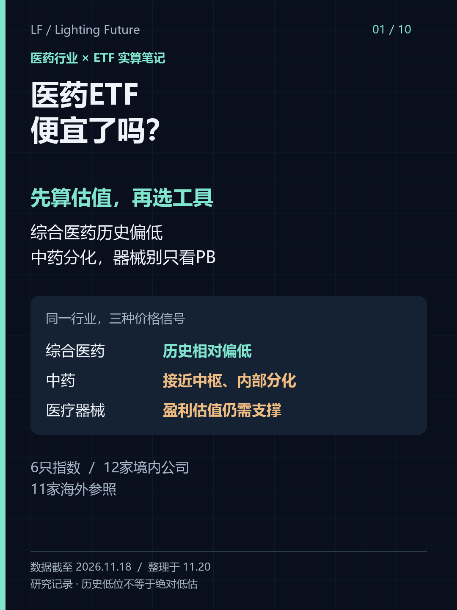
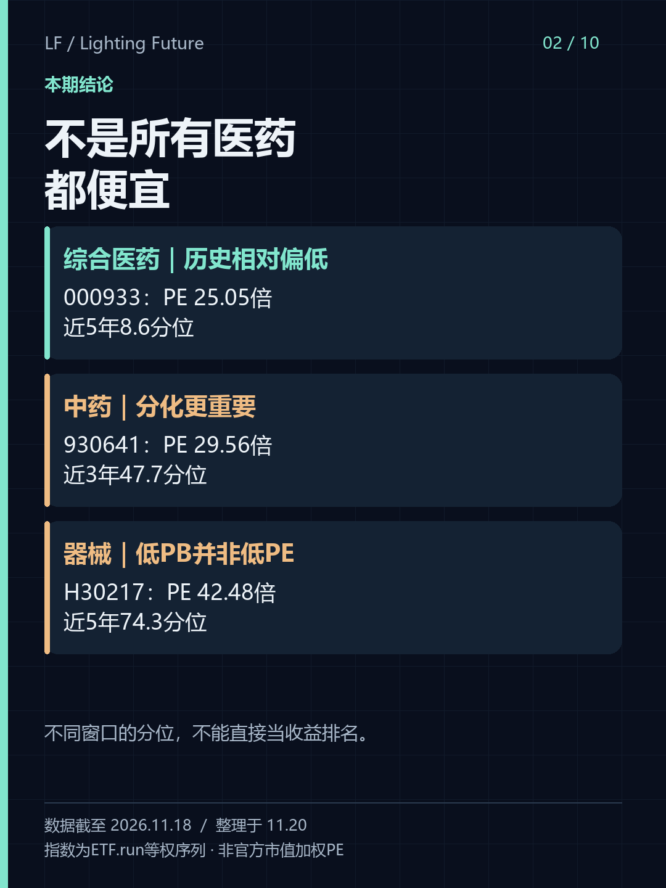
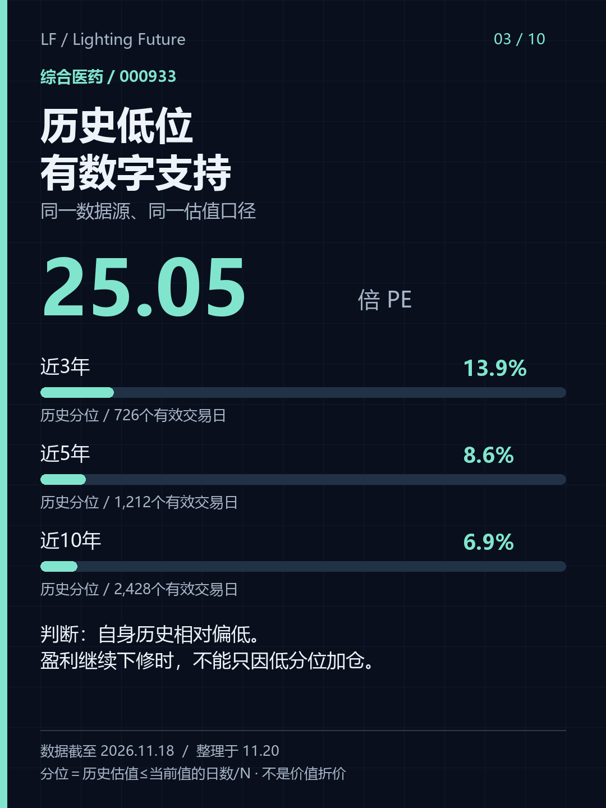
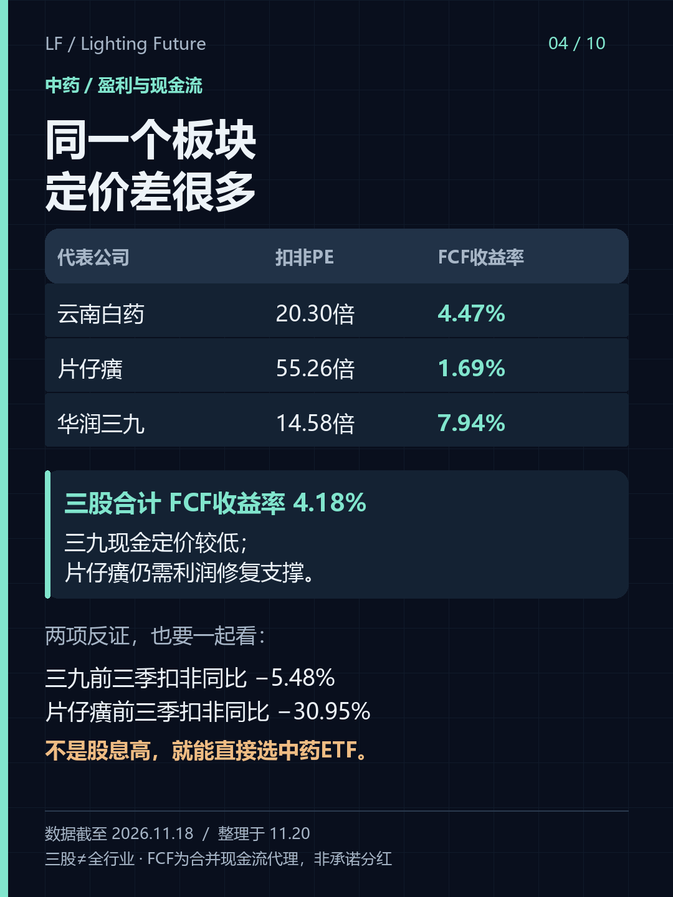
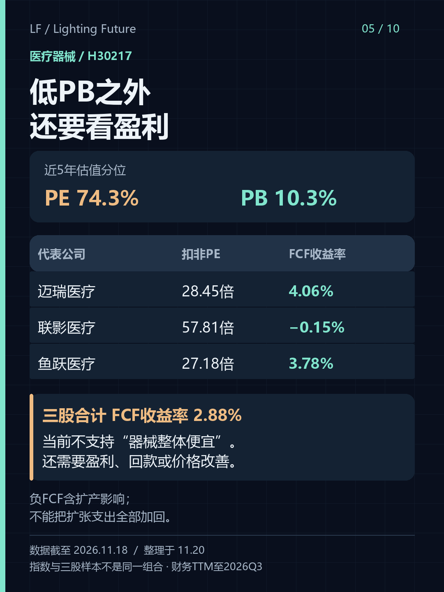
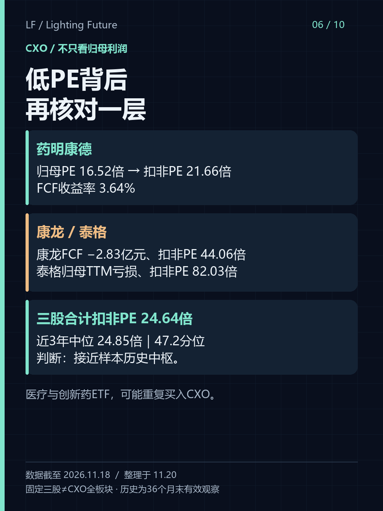
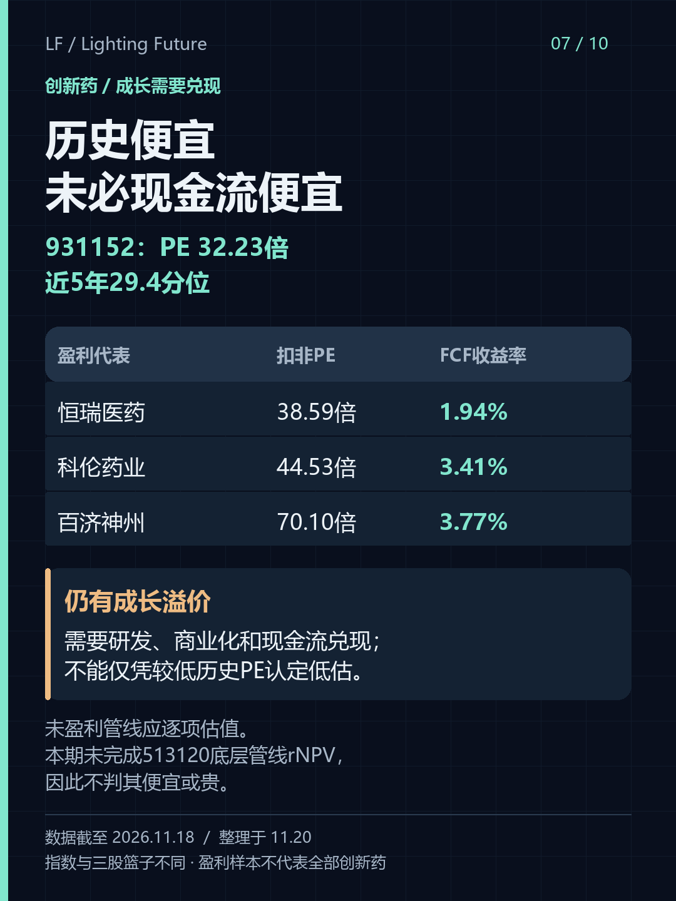
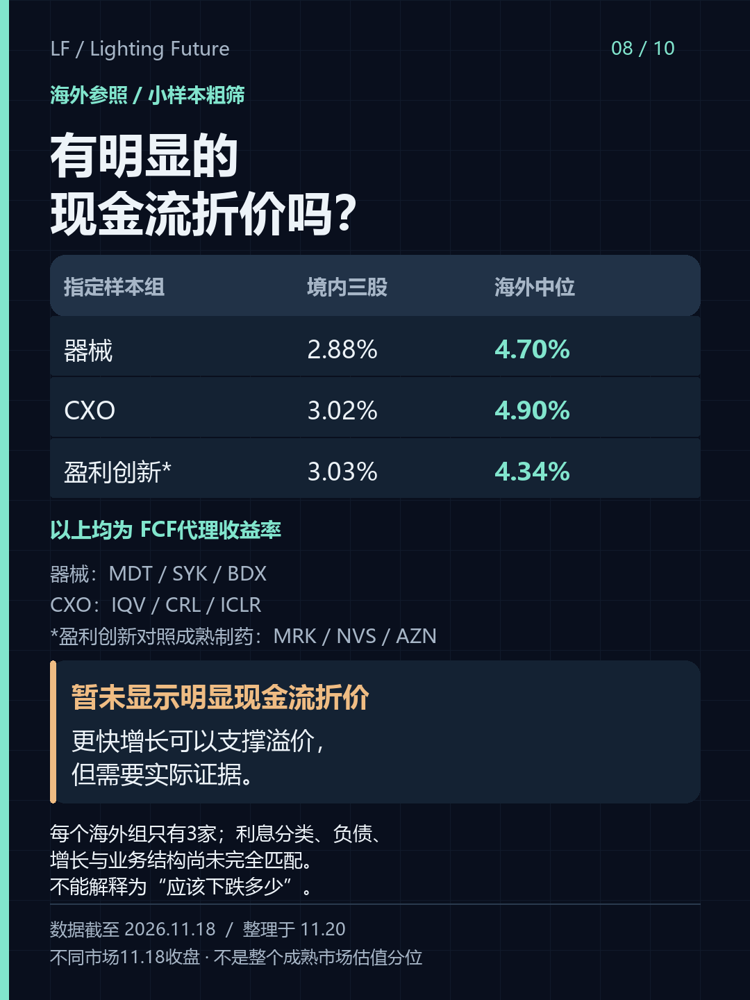
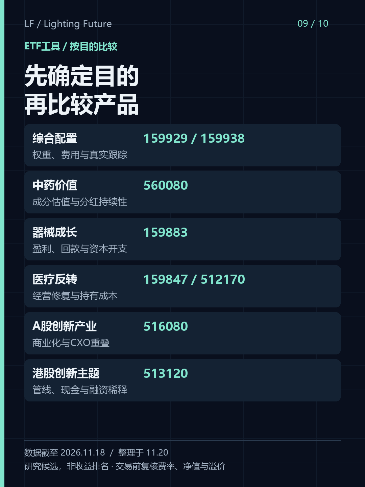
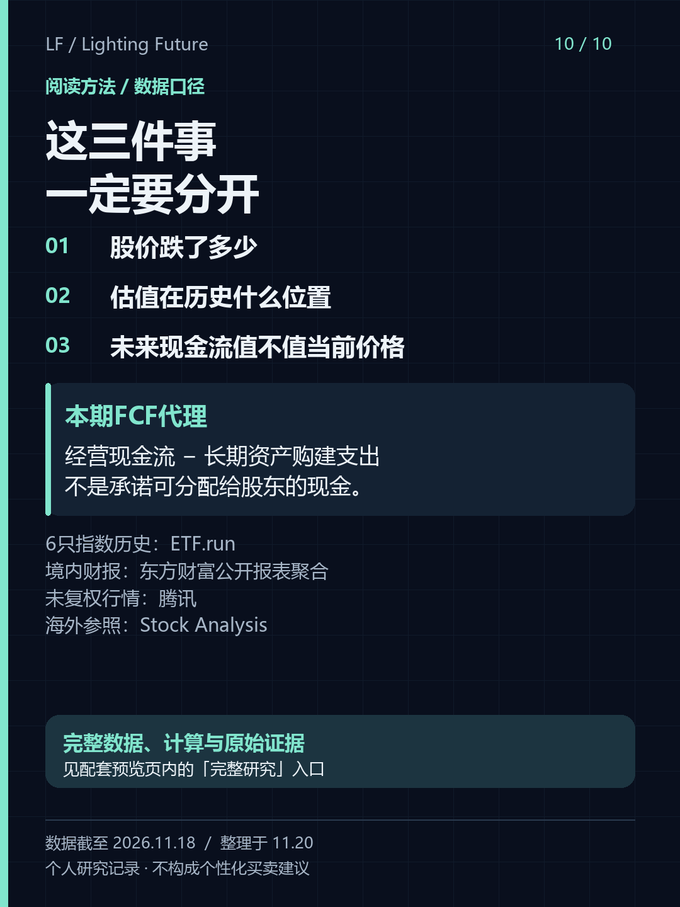

01 / 封面下载PNG ↓
1张封面＋9张正文图 · 1080 × 1440 PNG · 点击图片放大查看
对应研究v0.3；数据截至2026-11-18，制作于2026-11-20。图片为已核实研究的可视化，不是实时行情。










医药ETF便宜了吗？算完再选 医药跌了这么久，能直接说“便宜”吗？ 这次对照了6只指数、12家境内代表公司和11家海外参照。结论是：不同细分，价格含义差别很大。 ① 综合医药：自身历史相对偏低 中证医药卫生PE约25.05倍，近5年8.6%分位：同口径历史中，约8.6%的交易日比现在更低。 这支持“历史偏低”，还不能证明未来回报一定高。 ② 中药：分化比“便宜”更重要 指数PE约29.56倍，近3年47.7%分位，接近中部。 白药、片仔癀、三九的FCF代理收益率分别约4.47%、1.69%、7.94%。同属中药，现金流定价差很多；还要核对利润下滑和现金流能否持续。 ③ 医疗器械：低PB不等于低盈利估值 指数PE约42.48倍，近5年74.3%分位。 迈瑞、联影、鱼跃三股合计FCF收益率约2.88%，海外MDT、SYK、BDX三家参照中位数约4.70%。当前没有显示明显现金流折价。 这只是小样本粗筛，业务、负债和会计差异尚未完全调整，不能直接变成“高估多少”。 ④ CXO：归母PE可能掩盖差异 药明、康龙、泰格三股合计扣非PE约24.64倍，近3年47.2%分位，接近样本历史中枢。 药明归母PE约16.52倍，扣非约21.66倍；康龙FCF为负。不能把整个板块都叫低估。 那么ETF怎么选？ • 行业配置：先比较159929、159938。 • 中药价值：560080需看实际成分，不能只看股息。 • 器械成长：159883是工具候选，估值仍需盈利支撑。 • 医疗反转：比较159847、512170的成本和跟踪。 • 创新产业：516080有CXO暴露；513120未完成管线估值，本次不判便宜。 我的选择顺序：先看持续盈利和现金，再看历史位置与海外参照，最后选ETF。 口径：指数PE为ETF.run等权序列；FCF代理＝经营现金流－长期资产购建支出，不是可直接分给股东的钱。三股样本不代表完整板块或ETF；历史低位不等于绝对低估。 数据截至2026.11.18。个人研究记录，不构成买卖建议；完整数据和限制见长文。 #医药ETF #医药行业 #ETF研究 #估值分析 #价值投资 #现金流 #投资学习
未自动发布到小红书。海外只作小样本参照，样本不等于整个行业；保留图片脚注。